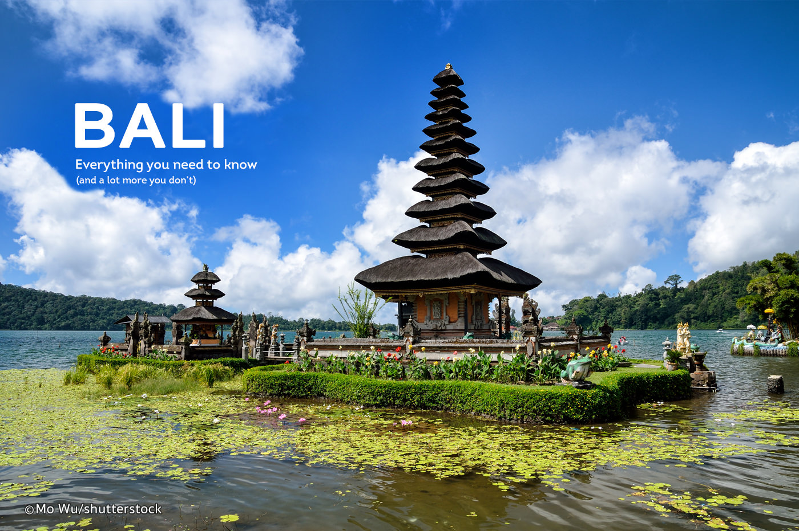
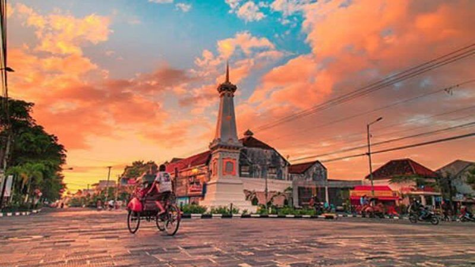

Bali Eksplore

Bali (Balinese: Indonesian: Pulau Bali, Provinsi Bali) is an island and province of Indonesia with the
biggest Hindu population. The province includes the island of Bali and a few smaller neighbouring islands, notably
Nusa Penida, Nusa Lembongan and Nusa Ceningan.
It is located at the westernmost end of the Lesser Sunda Islands, with Java to the west and Lombok to the east. Its capital,
Denpasar, is located in the southern part of the island.With a population of 3,890,757 in the 2010 census, and
4,225,000 as of January 2014, the island is home to most of Indonesia's Hindu minority.
Read more ...
Yogyakarta Eksplore

Yogyakarta (also Jogja or Jogjakarta; Javanese: formerly Dutch: Djokjakarta/Djocjakarta or Djokja) is
a city on the island of Java in Indonesia. It is renowned as a centre of education (Kota Pelajar), classical
Javanese fine art and culture such as batik, ballet, drama, music, poetry and puppet shows.
Yogyakarta is the capital of the Yogyakarta Special Region and was the Indonesian capital during the
Indonesian National Revolution from 1945 to 1949, with Gedung Agung as the president's office. One of the districts
in Yogyakarta, Kotagede, was the capital of the Mataram Sultanate between 1575 and 1640.
Read more ...